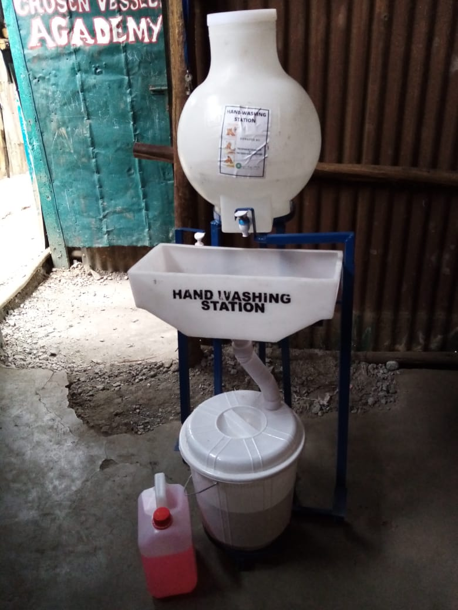
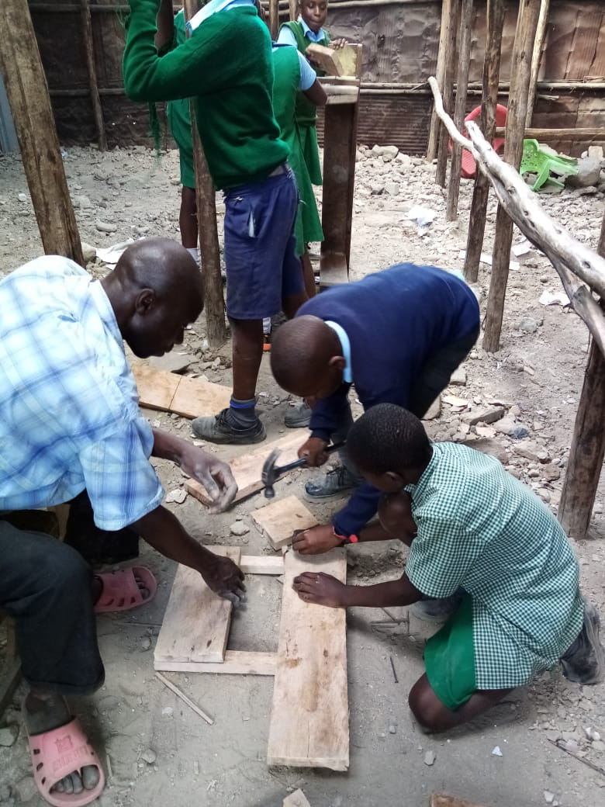

Back
Give Corona no Chance!
23-02-2021
For now, the whole world is suffering from the Corona pandemic situation. But especially in surroundings like Mathare, the virus shows his most dramatic effects. Low to no sanitation and medical care combined with the high population let people suffer in the slum everyday. With your help and donations we were able to provide not just reusable face masks, but also hand sanitation stations! Due to the lack of space even a new school building is under construction at the moment to allow Corona-safe school lessons. The new building is going to have concrete foundation and should harbour 30 more potential students from the Mathare Slum. Thanks for your donations and stay updated with us and our project!

New Desks and Tools
01-01-2021
To start the new year with a lot of motivation, the organisation was able to buy material for a whole set of new tables and desks. Thank you very much for your financial support! In a session of one week, the teachers crafted new desks with a lot of help by our school children. Thereby, they learned how to use diverse tools and made their heads free from learning and stressful surroundings for a bit. If you are interested in our project and how you can contribute, feel free to contact us via mail (thechosenvessels_kenya@gmail.com). We wish you a successful and blessed new year. Stay safe and healthy!

Daily Food supply
20-12-2020
The year 2020 is coming to an end and christmas is coming closer. Still, we are working non-stop to allow children in Mathare access to education and food. Therefore, with your spendings we managed to get new kitchen ware like plates and a big new cooking pot! Without you, we are not capable of feeding 150 children everyday, but for now our feeding programme runs for one year without andy delay. The children get their breakfast and lunch in our school, which allows them to participate in the lessons actively and compensates their bad conditions at home. With your help, we want to provide our services to more children in th Mathare slum straight by the slogan: 150 done, 400.000 still to come! Stay up to date what our next plans are in our monthly blog and have a blessed and relaxed christmas time. We, the "The chosen vessels Kenya" wish you a merry christmas and a happy new year 2021.